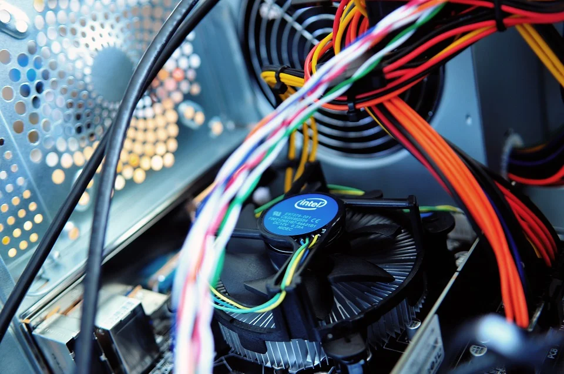

Computer Science
As one should expect, being in computer science, I am very passionate about technology. I've personally had the chance to build/configure various computers for my own use, from local NAS (Network Attached Storage) servers to gaming computers and linux machines. Below I've added what was probably my first true intrigue in Linux, open-source software and alternative electronics companies:

Biking
Despite enjoying programming, I do like to get out every now and then. My sport of choice is biking, as I love to explore my local area, appreciate nature and even use it as a mode of transport.